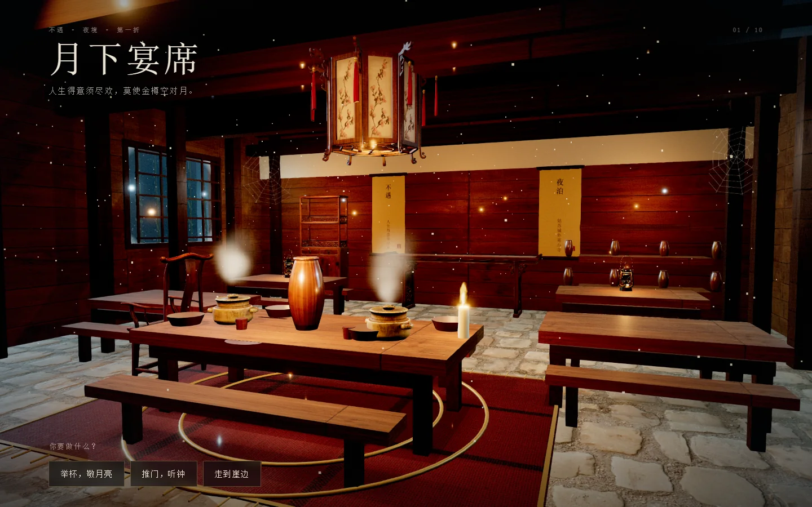
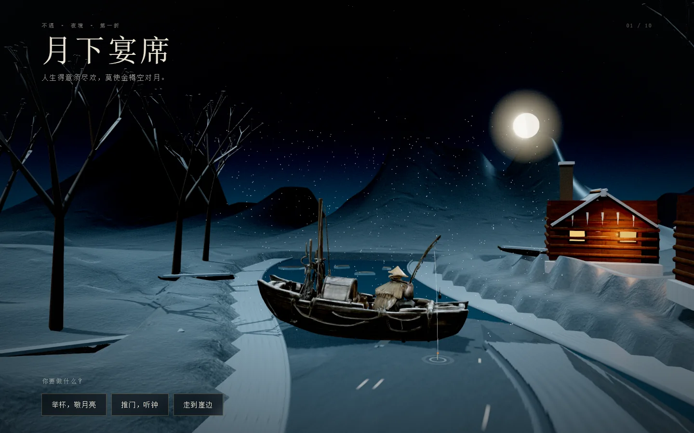
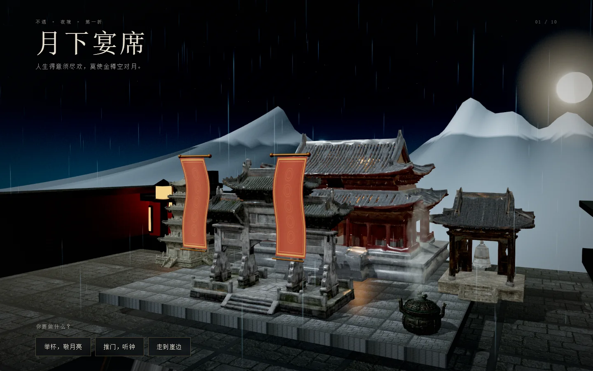
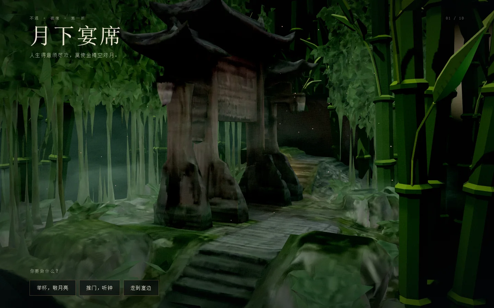
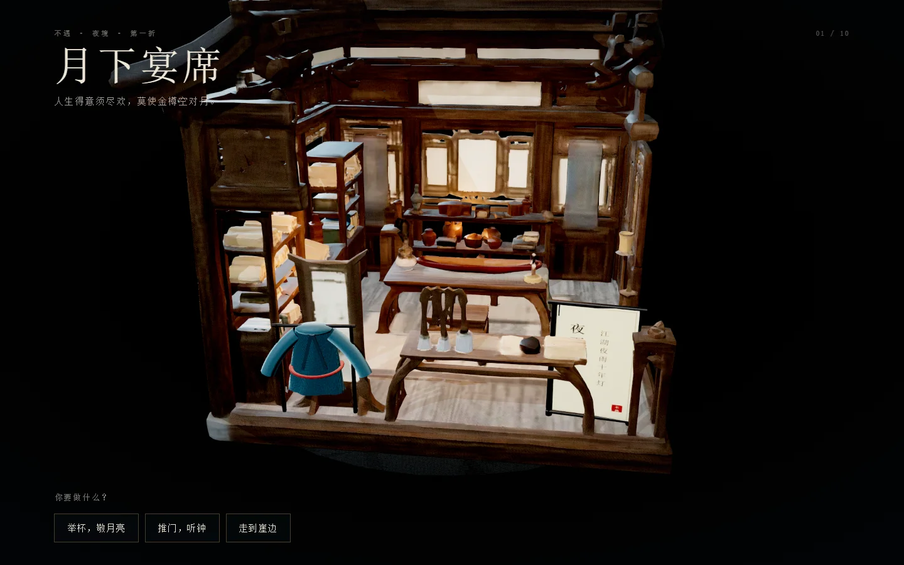
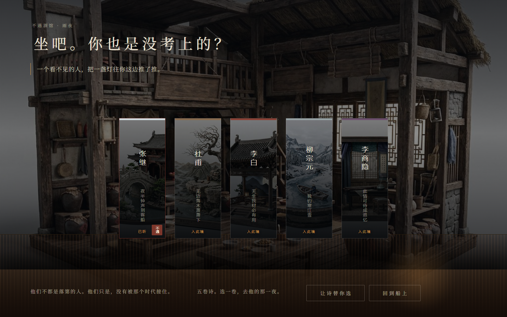
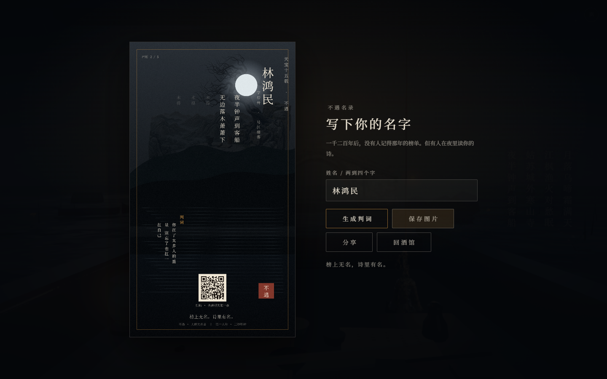

AHOLO LUX3D · 3D AI 黑客松 · 评审画廊
不遇大唐失意者
THE ONES THE ERA MISSED
你在《枫桥夜泊》的客船上醒来——你不是张继。敲一下钟，等三秒，听见一千二百年前没有等到的那个人。五个诗人，五种没有被时代接住的方式。五境均为实时 WebGL 3D，第一/第三人称可走，截图取自当前构建。

不遇酒馆 · 月下宴席 · 实时 3D
五境 · 同一夜里的五种失意
酒馆 · 月下宴席

江雪 · 独钓

古寺 · 夜雨

竹林 · 不遇

书斋 · 夜雨寄北
酒馆与判词卡


机制
敲铜铃 → 基于 Web Audio AudioContext.currentTime 的真实 3.0 秒 → 近钟、窗火、风、水纹 → 远钟与诗浮现。
低头看船头：家书、酒、桨；进不遇酒馆，五卷诗，五种失意；只做一个动作，收一句诗；写名，得到一张可保存/分享的判词卡。
3.000s声速调度
5 + 1五境 + 酒馆
Lux3DG1 + 图像 API
Bloom+ SMAA · 无 DoF